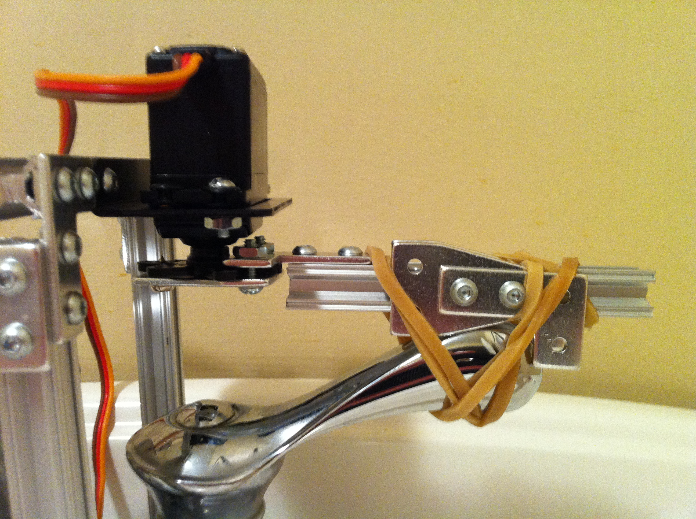
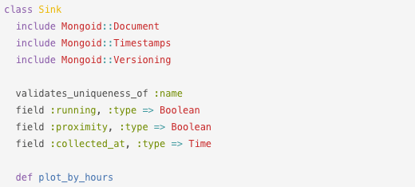

Arduino Cat Faucet
Quit Day Job
Staycation Numero Uno
Boss: Ok ... ?!* Six Weeks Off *
*Freak!*
Opportunity Rose ...
Staycation Numero Dos
Habit now* Four Weeks Off *
The Dream
Minimum Viable Product
My High School Counselor Told Me To Dream Big
- Automatic water - 1 minute every day to think about this.
- Metrics - Is my cat manipulative?
- Temporary - No holes, no vampire taps.
The Dream
How Am I Going To Do This? :|
The Dream

Notice the eraser
Aside time ...
Looking at Work
$ git rebase -i hard_won_feature

Looking at Work
| Watch final run | Watch entire movie |
$ git clone | $ git log |
Not saying my project is a perfect run. Just saying this as it applies to retrospectives, repos and code reviews. Thought it was a good point by Justin Searls at RubyConf 2014.
Draw, Think, Draw

Prototype
Prototype
Spikes and Questions
- Spike - Something that detects cats
- Spike - Something that moves the handle
- Torque?
- Precise structure? Fulcrum
- Anchor?
Microrax
Frame Base

Frame Base

Frame Base
My anchor question would be answered and I didn't know it (BDUF)
Building Up
3D is hard. 8 beams, 15 angles.
Servo Mount Bracket
$ cap deploy

$ cap deploy
Physics
Maybe obvious to some but I had to think about this one
I need an arm
Servo gear is just a star with holes
Servo Arm
Servo Arm
Servo Arm
Servo Arm

Action Grip Fail
Velcro also had no power in this evil sink domain.
Action Grip!
Ruby Talk?
Ok, that's the hardware thing.
- Need code to detect cats, move arm
- Need communication
- API and software stuff. Easy!
- We need roflscale database immediately.
2 requests per day ≈
0.00002364066 requests / sec - MongoDB or possibly a 1.7 billion node hadoop cluster
- Architecture Time!
Señor Software Engineer?
No. Ingeniero Principal de Los Grifos de Gatos.
Arduino Shields
XBee Shield for communication problem
XBee - p2p wireless auto config chip

JSON over XBee Serial
// example JSON message
{
"sensor": "sinks",
"name": "basement",
"proximity": "true",
"running": "true",
"hash": "82C61D54A77D6A90219E4E40CE6C8440",
"type": "metric"
}Serial Problems
- No TCP. Checksum. But ...
- MD5 contrib lib worked --> time --> crash
- Reading JSON off serial was weird ...
Awkward Apology First
A long time ago, Rails 3.0.3. Macports? Leopard?There are three types of code in the world:
- Code you don't want anyone to see.
- Code you refactored and it's ok for someone to see.
- Textbook quality code you emboss your shoes with so when you walk you leave beautiful footprints.
This is #1 so I never, never, never want to present it or share it.
Here's the repo: github.com/squarism/cat_faucet
Serial Reading
github.com/squarism/cat_faucet
require 'serialport'
require 'json'
...
sp = SerialPort.new(...) # options
start_json = false
while true do
c = sp.getc
if c == "{" && !start_json
start_json = true
json_buffer = c
else
if c != "}"
json_buffer += c
end
if c == "}"
json_buffer += c
json_string = json_buffer
# parse ...
Serial In Action
VALID: <metric>, proximity:0 running:false
Posting to http://localhost:3000/sinks/ -->
{"sensor"=>"sinks", "name"=>"basement",
"proximity"=>"0", "running"=>"false", "type"=>"metric"}
Response 200 OK : mapped json_request.
Serial Fail
If I had to do it again ...
- Use a binary protocol. JSON is for the web.
- "Ruby developer goes embeddded" mistakes.
- Instead of looking for {} characters, use state machine style
brace_count += 1 if character == "{"
brace_count -= 1 if character == "}"
JSON.parse(buffer) if brace_count == 0Because my lame attempt can't do embedded docs
Arduino Box
Hook Up the I/O

Hide the Implementation
Infrared sensor not picturedDemo
Mongoid Versioning

> Sink.first.plot_by_hours
=> [[23, 20.0], [22, 40.0], [18, 40.0]]
Versioning
{ "_id" : ObjectId("..."),
"collected_at" : "Tue Mar 01 2011",
"created_at" : "Wed Feb 16 2011",
"name" : "basement",
"proximity" : false,
"running" : false,
"updated_at" : "Fri Mar 04 2011",
"version" : 5,
"versions" : [
{
"version" : 1,
"collected_at" : "Wed Feb 16 2011",
"created_at" : "Wed Feb 16 2011",
"name" : "basement",
"proximity" : false,
"running" : false,
"updated_at" : "Wed Feb 16 2011",
"_id" : ObjectId("...")
},
Rails
Iterate
Metrics
Fnordmetrics

Problems
Problems
- Servo Buzzing -
servo.detach(); - Frame Torque
- Flot (my Rails app)
- Silent JS errors
- Data format
- Linux
- Yak shaving RAID, dist-upgrade
- Kernel revision fixes serial but breaks networking after scp of 90MB?
- dkms upgrades ... eventually linux stable had both fixes in
Reaction
Reaction
Reaction
Reaction
Reaction

Reaction
Science Fair!

A Thing
Myself
- Firmware
- Long Lived - 4 years!
- Cat Behavior Learned ... bye DIY Rails app
- Much learning, many insight
Insight
from one thing, know ten thousand things― Miyamoto Musashi, The Book of Five Rings
Ten Thousand Things
- Arduino memory (C, chip). Run away!
- Microrax adjusts - so it's 1/16" forgiving
- Microrax: order extra bolts, back-plates and joint pieces
- Servo torque changes with voltage
- Installation is tricky. Don't be afraid to change your design. Iterate.
- Don't over-engineer or favor tools (mongo)
Ten Thousand Things - Don't Worry Almost Over
- Hardware Hacking is so fun to share you guys!
- Physical Deployment is weird you guys (it's not cap deploy!)
- Hardware
¯\_(ツ)_/¯Software<3 <3 <3 - Let dead code go, it's ok, you learned something
Biggest Insight
Contiguous blocks of time for thinking is solid gold.